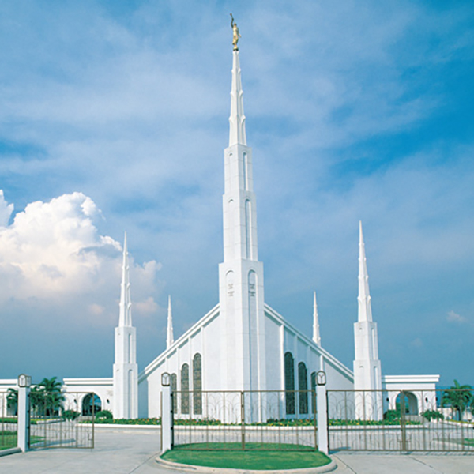

Temples
Home
Old
New
Large
Small
Home

Manila Philippines Temple
Cebu Philippines Temple
Urdaneta Philippines Temple
Davao Philippines Temple
Alabang Philippines Temple
Bacolod Philippines Temple
CDO Philippines Temple
Bangkok Thailand Temple
SaltLake Temple
 SaltLake Temple
SaltLake Temple